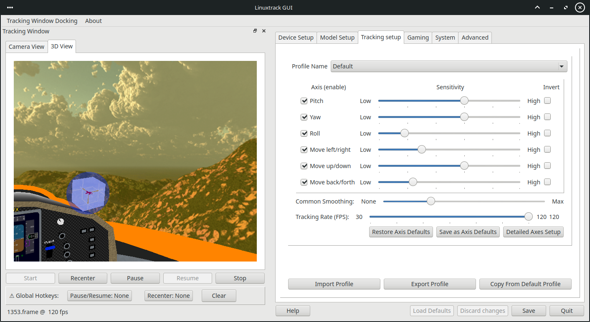
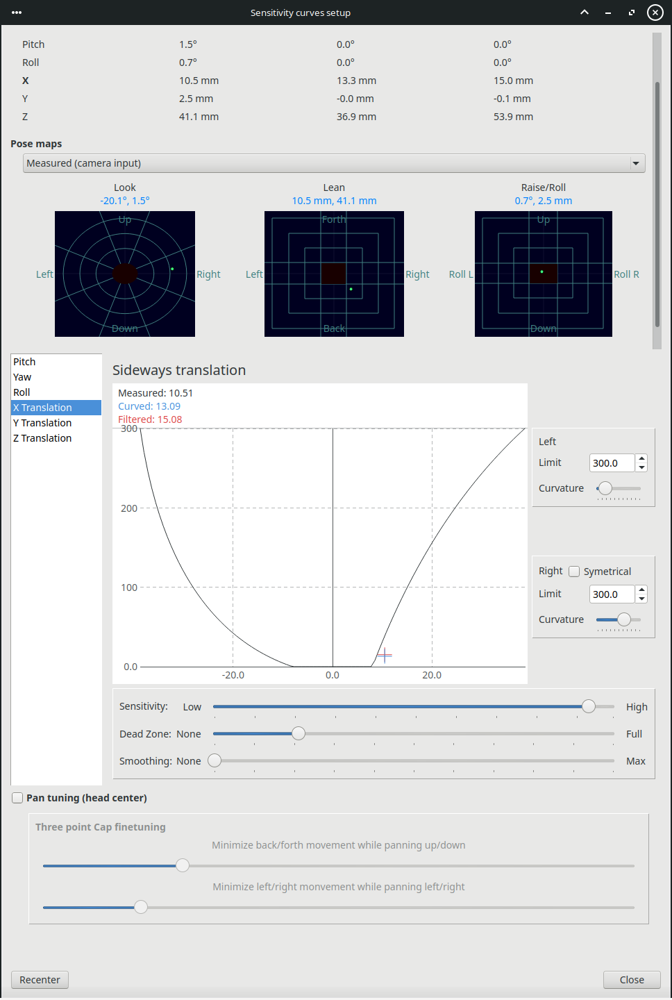

When you have the tracking device and model set up, then you can proceed to the tracking customization.
|
 |
Here you can set sensitivities, dead zones, nonlinearities and the amount of filtration for each axis separately; you can also turn unwanted axes off, specify limits of each axis and so on... All this can be done separately for each target program/game.
The Default profile is quite special - when an unknown game/program is run for the first time, the Default profile is copied over as a base of the new profile.
Make sure you have selected the desired profile. Controls in the Tracking setup pane lets you do the following:
All the controls have immediate effect on the tracking, so you can directly see the impact of the change. Also note, that while it is possible to run ltr_gui in parallel with a client program/game, it is not recommended. The tracking does work without the GUI running, unlike other popular alternatives (NP, FreeTrack, FaceTrack NoIR...).
When Detailed axes setup button is pressed, new dialog pops up allowing you to set all aspects of all axes.
|
 |
On the left side of each axis panel you can see a visualization of the current axis and its setup. For both halves of an axis you can set an in-game limit of an axis and the curvature (nonlinearity) of the axis. There is a Symmetrical check-box that allows you to unchain those halves and set each one separately.
You can also set the axis sensitivity, dead-zone and the amount of additional filtration.
The higher the sensitivity is, the smaller head movement will be necessary for tracking. Just be careful not to set it too high - it might result in a stiff neck, and other problems.
Dead-zone allows you to specify size of the region around the center position, where the output is ignored.
At the top of the dialog, the Pose maps section shows live head position on three maps (Look, Lean, Raise/Roll). Each map uses a dark plot with a center crosshair, teal guide rings, and a red dead-zone region at the middle. The red area matches the per-axis dead-zone sliders for that map's axes and updates immediately when you change them; the teal rings subdivide the remaining range from the dead-zone edge to the axis limit (decorative only). The Look map also shows diagonal spokes. A green dot shows the current measured or filtered position (selectable from the drop-down).
Smoothing slider can be used to give the particular axis additional amount of smoothing.